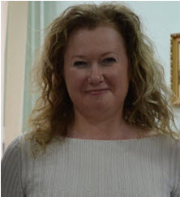

Леонова Елена Владимировна
18.10.1974 @TODO: не использовать br, hr, b, strong,
г. Запорожье
098-025-52-07 066-767-39-94
18.10.1974 @TODO: не использовать br, hr, b, strong,
г. Запорожье
098-025-52-07 066-767-39-94
2015 –2017
Запорожская государственная инженерная академия
ф-т «Программное обеспечение автоматизированных систем», спец.: инженер-программист
1992-1998г.г.
Запорожский государственный университет
ф-т РГФ, спец.: филолог
2003-2016 г.г.
ФЛП Леонова
2001-2003 г.г.
ЧП Александрова (интернет-клуб «Паутина»
Компаньон, администратор
Администратор (консультации клиентов по вопросам работы в интернет и играм, установка ОС Windows, мессенджеров,
антивирусных программ, игр, контроль бесперебойной работы локальной сети расчет стоимости работы клиента
за время пользования ПК, предоставление дополнительных услуг (выполнение рефератов, курсовых работ на различные
тематики, поиск информации в интернете, набор текста, распечатка)). Компаньон: обеспечение стабильной работы
компьютерного клуба (от организации клуба с нуля (проект, согласования и т.д.), до поддержки нормального
функционирования клуба), организации и проведении различных рекламных мероприятий, соревнований по компьютерным
играм внутри клуба, организация гибкой ценовой политики, системы скидок, контроль финансовой деятельности
клуба (учет работы администраторов, выполнения заказов)
2000-2001 г.г
ООО «АС» (производство мебели, металлопластиковых окон, продажа стройматериалов)
Офис-менеджер, менеджер по продажам, помощник технолога, и.о. бухгалтера.
Oфис-менеджер (ведение делопроизводства, деловой корреспонденции, кадрового учета, распределение звонков,
встреча посетителей, административно-хозяйственная поддержка всех сотрудников офиса, организация праздников)
Менеджер по продажам (привлечение новых клиентов (консультирование по ассортименту и техническим параметрам
товаров, обработка входящих заявок), поддержание взаимоотношений с наработанной клиентурой, ведение отчетности
по работе с текущими клиентами и поступающим обращениям, оформление основных коммерческих документов (договоров,
счет-фактур, накладных)) Помощник технолога (расчет стоимости заказа, подача заявок и контроль поставки материалов
к заказу) и.о. бухгалтера (работа с первичной бухгалтерской документацией, интернет-банкинг, ведение табеля
учета рабочего времени)